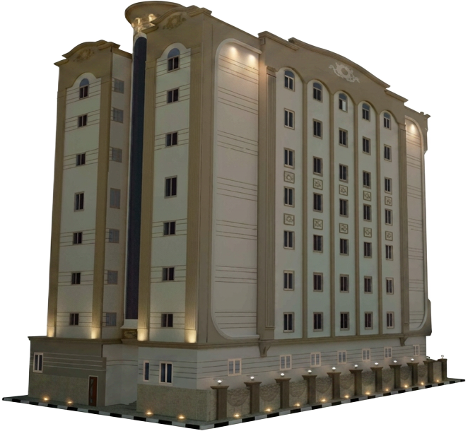
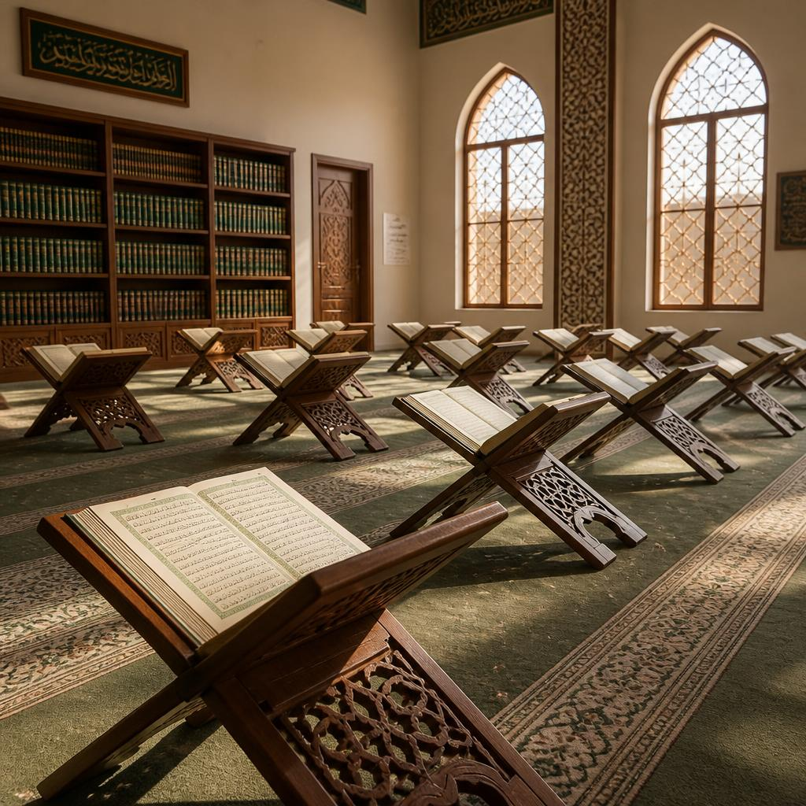

بِسْمِ ٱللَّهِ ٱلرَّحْمَٰنِ ٱلرَّحِيمِ
وقف خيري معتمد · هيئة الأوقاف بالمملكة العربية السعودية
وقف الفرقان الخيري ودار نسائية لتحفيظ القرآن
صرحٌ وقفيٌّ ينبض بالعطاء، وشراكةٌ مجتمعية خالدة لخدمة كتاب الله وبناء الأجيال في محافظة بلقرن.
انطلاقاً من إيماننا العميق بأن الاستثمار الحقيقي هو بناء الإنسان وعمارة الأوطان، يأتي هذا الوقف الأهلي الخيري ثمرةً لجهودٍ مخلصة وعملٍ دؤوب يهدف إلى نهضة مجتمعنا. يرتكز الوقف على استثمار صرحٍ معماري في مدينة عفراء بمحافظة بلقرن، ليُوجه ريعه بالكامل لدعم "جمعية تحفيظ القرآن الكريم" وتلبية كافة احتياجات "جامع الفرقان". لقد تكاتفت الجهود وتواصلت مسيرة البناء حتى وصلنا اليوم إلى مشارف النهاية لمرحلة التأسيس الشاقة. وبخطواتٍ واثقة نحو التشغيل، نهدف لأن يكون هذا الوقف منارةً ذاتية الاستدامة، تفيض بالخير دون الحاجة لأي تبرعات مستقبلية. عطاؤك اليوم هو حجر الزاوية الذي يُتوج هذا العمل المجتمعي العظيم.

وقف الفرقان الخيري ودار نسائية لتحفيظ القرآن

أُسس هذا الصرح المبارك بفضل الله ثم بفضل بصيرة ويدٍ معطاءة للشيخ عبدالله بن سعد بن حنش القرني (رحمه الله)، الذي جسّد أسمى معاني البذل والإحسان حين أوقف هذا المبنى. لقد ترك خلفه إرثاً مجتمعياً لا ينضب، ومسيرة خيرٍ تمتد أجورها إلى يوم الدين، ليكون نموذجاً يُحتذى به في تفريج الكربات وحب الخير للمجتمع.
استثمار العمارة لصالح جمعية تحفيظ القرآن الكريم ببلقرن، والإنفاق على حاجات جامع الفرقان الواقع شرق المبنى.
مساهمةٌ واحدة · أثرٌ دائم
الوقف الآن في مرحلته الأخيرة قبل الاكتمال. بعد التشغيل ستُموِّل إيراداتُ المبنى تحفيظ القرآن وعمارة المسجد ذاتيًّا، دون الحاجة لأي مساهمات مستقبلية. شراكتك اليوم بذرةٌ تُثمر صدقةً جاريةً جيلًا بعد جيل.
- رقم الشهادة الوقفية
- 1112506318
- رقم الصك
- 361188322
- تاريخ الصك
- 20 / 06 / 1436 AH
- صك النظارة
- 47312974 51 · 26/02/1447 AH
- رقم تصريح جمع التبرعات
- قيد الاستخراج
مجمّع الفرقان متعدد الاستخدامات
مبنى فندقي · حضانة تعليمية · كافيه · استقبال وجلسات — في مدينة عفراء بمحافظة بلقرن، منطقة عسير، المملكة العربية السعودية.
المرحلة الحالية: الهيكل الإنشائي
بعد أيامٍ وليالٍ من العمل المتواصل والتفاني لتخطي الصعاب الإنشائية، تكللت جهودنا بإنجاز الهيكل الخرساني بالكامل، ليكون الأساس المتين لهذا المشروع. وبعون الله ثم بدعمكم، نطمح لإنجاز ما تبقى خلال عامٍ واحد ليرى هذا الحلم النور.

الصورة أعلاه من الموقع توضّح اكتمال الهيكل الإنشائي للمبنى، وهو الأساس الذي ستبنى عليه أعمال التشطيب القادمة.
أعمالٌ تكتمل بشراكتكم
عرض بنود التشطيب (١١)▾
- استكمال أعمال المباني (الواجهات والتعديلات الداخلية)
- التعديلات المعمارية وأعمال التكسير والترميم
- أعمال اللياسة والدهانات
- الأرضيات والحوائط (سيراميك، بورسلين، رخام)
- الأعمال الكهربائية والصحية
- الأسقف المستعارة والجبس بورد
- أعمال الأبواب والنوافذ
- أعمال العزل
- أعمال التكييف والميكانيكا
- أعمال الموقع العام
- توريد الأثاث والفرش
- 01استكمال أعمال المباني (الواجهات والتعديلات الداخلية)
- 02التعديلات المعمارية وأعمال التكسير والترميم
- 03أعمال اللياسة والدهانات
- 04الأرضيات والحوائط (سيراميك، بورسلين، رخام)
- 05الأعمال الكهربائية والصحية
- 06الأسقف المستعارة والجبس بورد
- 07أعمال الأبواب والنوافذ
- 08أعمال العزل
- 09أعمال التكييف والميكانيكا
- 10أعمال الموقع العام
- 11توريد الأثاث والفرش
بدعم وإشراف من

صدقةٌ جاريةٌ لا ينقطع أجرها
أيها الباذل للخير، إن مساهمتك في هذا الوقف ليست مجرد إنفاق مالي، بل هي تجارةٌ رابحة مع الله، وتجسيدٌ لنبل أخلاقك، واستشعارٌ لمسؤوليتك العظيمة تجاه مجتمعك. كل ريال تجود به هو لبنةٌ تُبنى، وآيةٌ تُتلى، ونورٌ يضيء دروب الأجيال القادمة
حوكمة الوقف
حملت ذرية الواقف هذه الأمانة العظيمة لتواصل مسيرة الخير من خلال "مجلس نظارة" يعمل بجد وإخلاص، ويسهر على إدارة الوقف وتنمية موارده بشفافية تامة ومسؤولية أمام الله، ثم أمام الهيئة العامة للأوقاف.
- ناظر الوقف
- من ذرية الواقف
- هاتف الناظر
- +966 50 560 9022
- البريد الإلكتروني
- info@alforgan.org
- تواصل
- مدينة عفراء، محافظة بلقرن، منطقة عسير، المملكة العربية السعودية
شارك في إكمال وقف الفرقان
طوبى لمن جعل ماله خادماً لكتاب الله وسبباً في نفع الناس. شارك في إكمال وقف الفرقان؛ فمساهمتك اليوم لمرة واحدة ستُثمر عطاءً مجتمعياً مستداماً لك ولمن تحب. لتفاصيل التحويل أو الشراكة في إكمال أعمال التشطيب، يُرجى التواصل مع مجلس النظارة.
يُرجى التواصل مع مجلس النظارة لتأكيد التحويل واستلام الإيصال.
«مَّثَلُ الَّذِينَ يُنفِقُونَ أَمْوَالَهُمْ فِي سَبِيلِ اللَّهِ كَمَثَلِ حَبَّةٍ أَنبَتَتْ سَبْعَ سَنَابِلَ في كُلِّ سُنبُلَةٍ مِّائَةُ حَبَّةٍ»